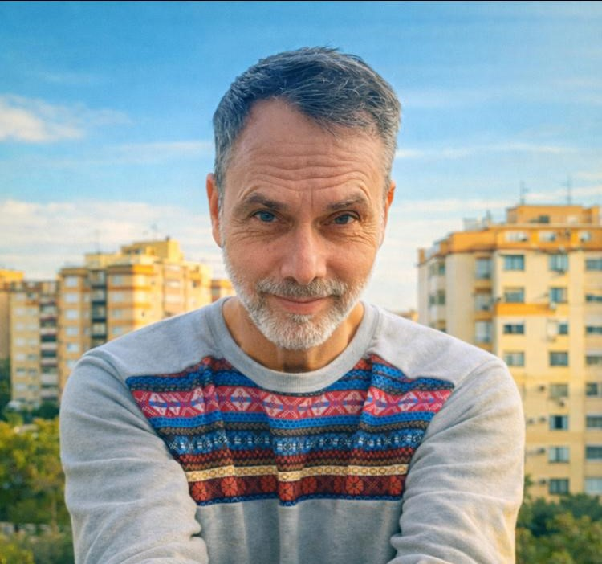
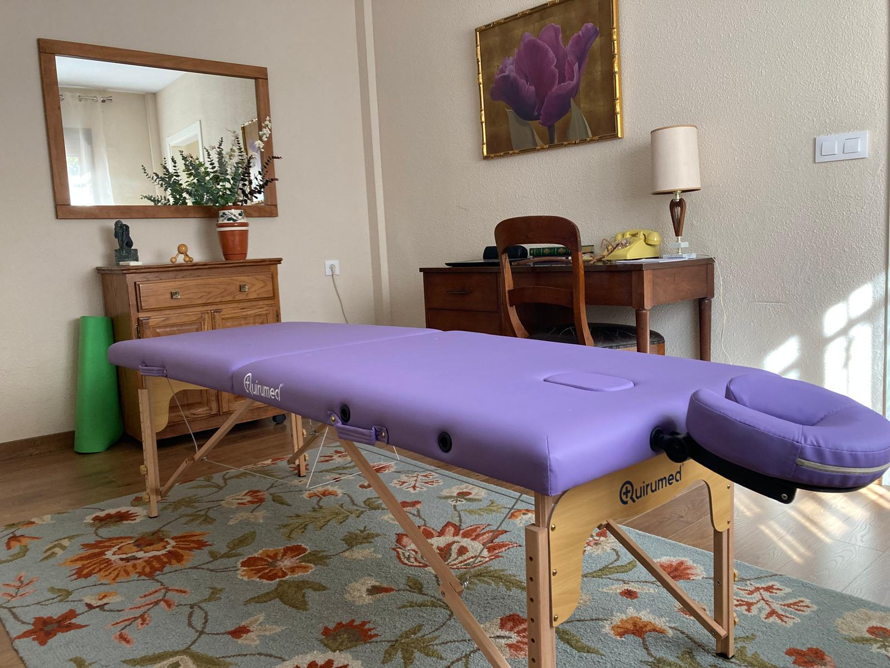

Therapeutic massage · Bodywork · Seville
Daniel Hinojo
Therapeutic Massage & Bodywork
Over 20 years of experience helping people reconnect with their bodies, reduce pain, and regain a sense of security and well-being.
Approach
Attention to how the nervous system responds to touch, movement and attention.
Drawing from this combined training, Daniel works with acute and chronic pain, persistent tension, and stress-related patterns by helping clients actively engage in their own process through guided touch, movement, and attention. His approach emphasizes clarity, participation, and nervous-system regulation rather than passive treatment.
Alongside his professional work, Daniel maintains an ongoing personal practice of meditation and embodied inquiry. It is this integrative, lived approach that allows him to adapt his methods fluidly and responsibly to each client’s individual needs as they present in the session.
Background
Academic & therapeutic training
Swedish Institute College of Health Sciences
Associate Degree in Massage Therapy · New York, USA
Gestalt Psychotherapy
4-year professional training (2018–2022) · IGG Institute, Berlin
Naturopath / Heilpraktiker
Training equivalent to pre-clinical medical studies (2009–2011) · Berlin, Germany
Methods
Specializations & techniques
- Swedish massage
- Deep tissue massage
- Myofascial release
- Orthopedic techniques
- Trigger-point work
- Muscle-energy techniques
- PNF / proprioceptive neuromuscular facilitation
- Joint mobilization
- Guided awareness & education
Client feedback
Reviews from Google
“Daniel is the best. He is extraordinarily sensitive to each person and their needs at every moment. He never repeats a massage; he constantly adapts to what is happening in my body.”
— Michael T., artist
“As an aerial acrobat, I am extremely particular about the type of bodywork I receive. With Daniel, I know I am always in excellent, careful and truly therapeutic hands.”
— Sarah G., aerialist
“Daniel is a highly qualified therapist with in-depth knowledge. His ability to communicate what he is doing during treatment is truly impressive.”
— Andrea F.
“For more than five years, Daniel has been coming to our company once a month to treat our employees. He attends to each person’s individual needs and ensures a positive and relaxing atmosphere.”
— Corporate client
Practical info
A quiet, discreet private practice in Santa Clara, Seville.
- Price
- 60 € / 60 min
- Cancellations
- At least 24 hours in advance · late cancellations 50%
- Location
- C. Ópera Carmen 35, 41007 Sevilla

Shall we talk?
A real conversation clears up questions, worries and doubts.
Text me now, call, or send an email. If I am with a client, I will get back to you as soon as I can.